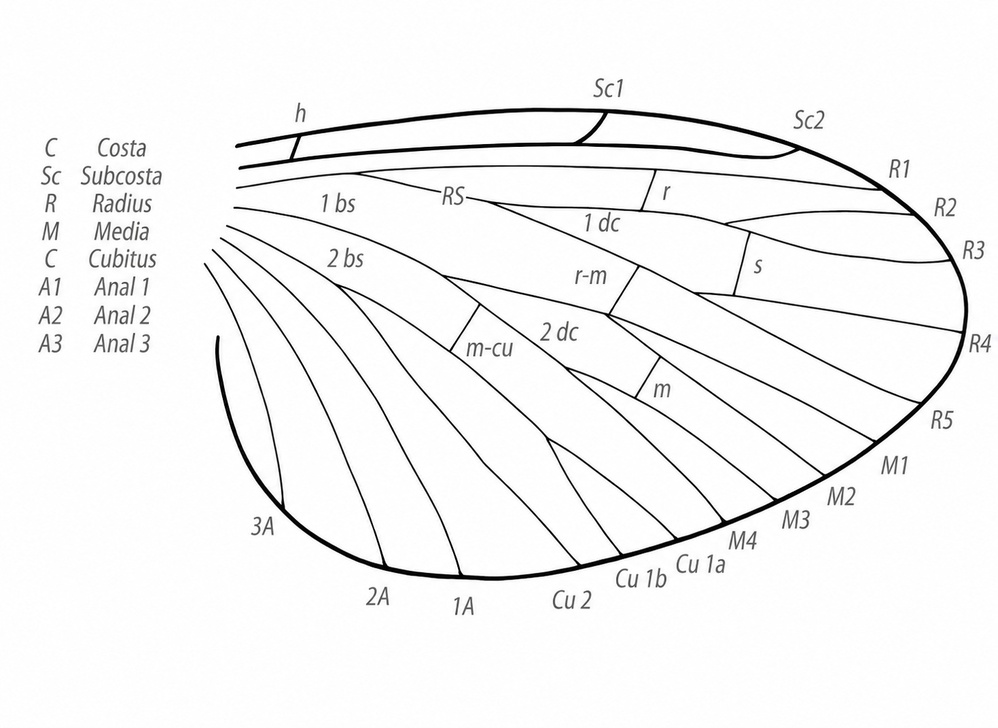

Skrzydło owadów – baldaszkowate, dwuścienne uwypuklenie powłok ciała (fałdy skórne), wzmocnione żyłkami, pokryte czasami włoskami lub łuskami służące owadom jako narząd lotu. U pierwotnych i większości obecnie istniejących gatunków występują dwie pary lotnych skrzydeł, na drugim i trzecim segmencie tułowia. Użyłkowanie skrzydeł (zwłaszcza lotnych) jest bardzo charakterystyczną i ważną cechą wykorzystywaną w systematyce.

U niektórych grup systematycznych pierwsza para skrzydeł może ulec sklerotyzacji i pełnić funkcje ochronne, a nie lotne (np. u chrząszczy lub pluskwiaków różnoskrzydłych). U pewnej części owadów przekształceniu uległa druga para skrzydeł. U muchówek uległa ona przekształceniu w przezmianki. Nieliczne gatunki są pierwotnie bezskrzydłe, a inne wtórnie utraciły zdolność lotu.
Powstanie skrzydeł tłumaczy kilka alternatywnych hipotez: m.in. paranotalna i skrzelotchawkowa. Nie mają one jednak żadnych powiązań rozwojowych z odnóżami.